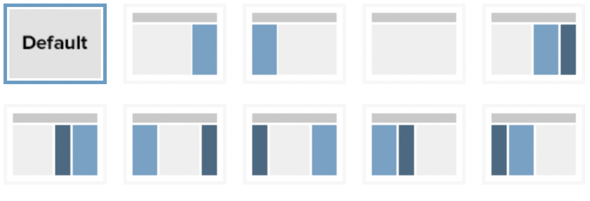
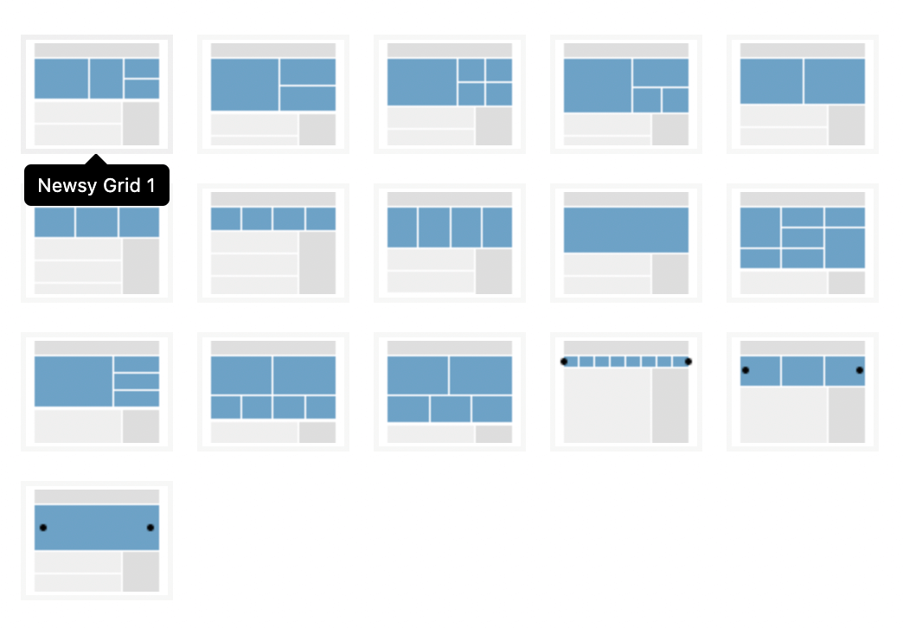
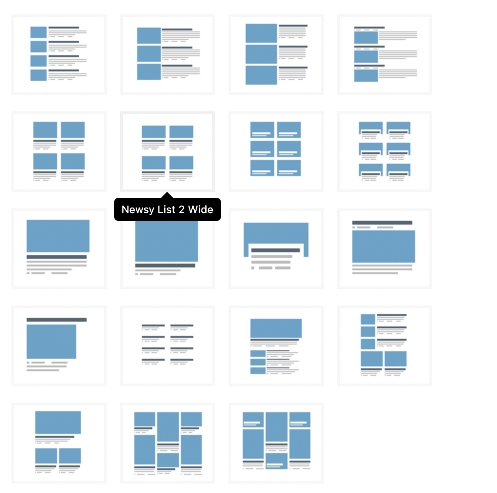

Category are predefined taxonomies in WordPress. Read more about taxonomy in WordPress blog.
In category archive page you can see all the posts belong to corresponding category. This page has its own setting. First we talk about universal archive page settings for all categories but it’s possible to override these settings for every single category.
Now go to Newsy → Theme Options → Categories, here you can find category archive page options.
Category: Header
-
Header Template
Select a category header style. -
Show Breadcrumb?
Turn on this option to show breadcrumb. -
Show Description?
Turn on this option to show category description. -
Show Subcategories?
Turn on this option to show subcategories.
Category: Layout
In this part, you can setup general layout and background setting for your categories.
-
Layout
Select the layout you want, whether a single column or a 2 column one. This overrides general layout setting.
 -
Primary Sidebar
Pick a sidebar for Primary Sidebar. This option is not available for Layout 3.
-
Secondary Sidebar
Pick a sidebar for Primary Sidebar. This option is not available for Layout 1, 2 and 3.
-
Primary Sidebar Content Gap
Gap between content and primary sidebar.
-
Layout Style
Select layout style you want to use full boxed or content boxed layout.
- Full Width
Full wide width for header, footer and content.
- Full Boxed
Full boxed width for header, footer and content.
- Content Boxed
Header and footer will have full width, content will be inside boxed area.
-
Site Container Width
Choose size of site content container width. Please note, this option will appear if you enable Layout Style option.
-
Site Boxed Inner Width
Choose size of site content container width inside boxed content. Please note, this option will appear if you enable Boxed or Content Boxed Layout option.
-
Site Background Color
Choose color for background. Please note, this option will appear if you enable Layout Style option.
-
Site Background Image
Choose an image for background. Please note, this option will appear if you enable Layout Style option.
-
Site Inner Background Color
Choose color for background. Please note, this option will appear if you enable Boxed or Content Boxed Layout option.
Category: Grid
In this part, you can setup general headline grid setting for your categories.
-
Grid Style
Select the grid style you want, This option can be overridden on all sections.
 -
Grid Overlay Gradient
Select grid overlay style. -
Grid Item Margin
Set grid items space size.
-
Grid Height
Select grid height.
-
Grid Full Width
When possible grid will use full-width container.
-
Grid Block Extra Classes
Select block extra classes. Ex: You can set boxed style block or dark style block with these predefined classes.
Category: Listing
In this part, you can setup general headline listing setting for your categories.
-
List Style
Select the list style you want, This option can be overridden on all sections.

-
List Override Parts?
You can override loop parts for selected loop style above. This option will override selected loop style on "Modules" tab.
-
List Post Count
Set posts count for list.
-
List Pagination
Select pagination type for this template.
-
List Block Columns
Select block columns size for supported posts block.
-
List Item Margin
Select loop block items space size.
-
List Block Extra Classes
Select block extra classes. Ex: You can set boxed style block or dark style block with these predefined classes or you can add custom CSS classes.